- Click Data Analysis option in the Tools now.
- Data Analysis dialog box will get displayed as shown:
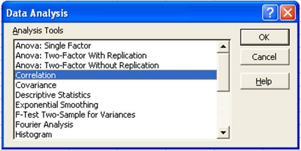
Correlation
- To do the correlation we consider a problem of finding correlation coefficient of data which relates to the Yield in grams (Y) and the Matured Pods (X) of 10 groundnut plants.
- The data is entered in the Excel sheet as follows:
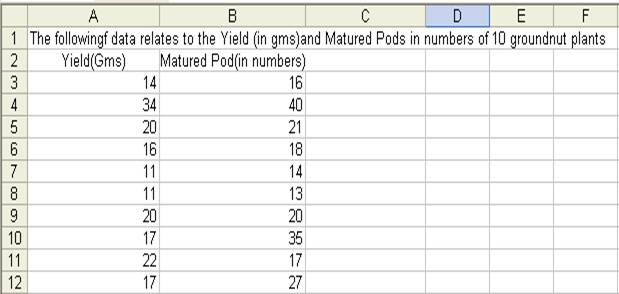
- Choose Correlation from the Data Analysis window then click OK button.
- Correlation window will get displayed as follows:
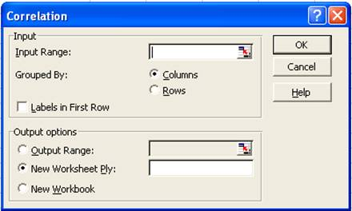
- Enter the input range if you know the input range of data or else make use of the address icon to mark the input range in the Excel sheet. In this example the input range is A2:B12.
- Since the data are grouped by column in this example, choose Grouped By Columns option.
- We can add the labels as the first row in the data range. So check the Labels in First Row.
- In the output options choose where you want to display the output. In this example the output range is given as D2.
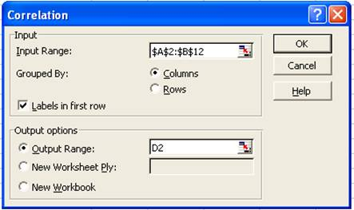
- Click OK button in the Correlation window.
- The result will be displayed from D2 as shown below:
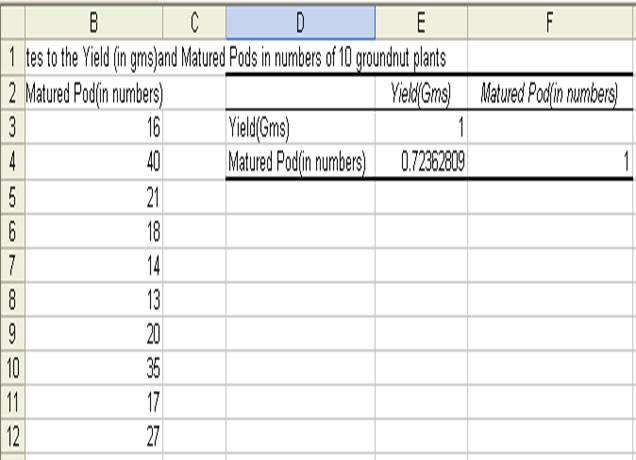
Regression
- To do the regression analysis we consider an example with paddy yield in Kg as dependent variable and ear length in cm as the independent variable.
- The data are entered in the Excel sheet as follows:
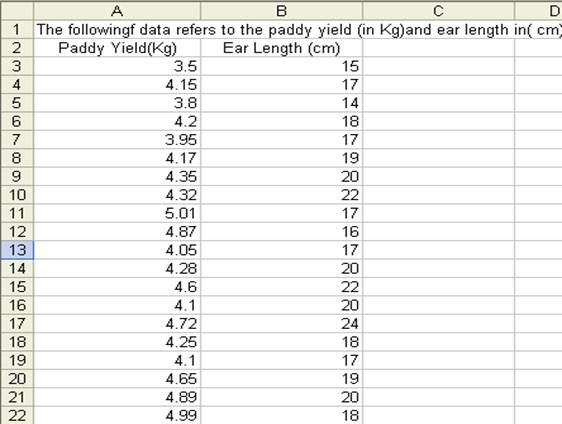
- The Regression procedure in the Data Analysis tools lets you choose one column as the dependent variable, and a set of contiguous columns for the independents
- It does not tolerate any empty cells anywhere in the input ranges.
- Therefore, if there is any empty cells in the input range, delete the rows contain empty cells.
- Choose Regression from Data Analysis and click OK.
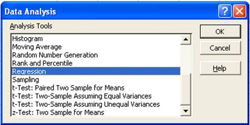
- In the Regression window enter the Y and X ranges if you know the address values or else the click the colored icon in the Y and X range tabs to fill the addresses.
- If the first row of the data entered includes labels then check the Labels box in the Regression window.
- Let the confidence level be set to 99%.
- In the output options choose where you want to display the output of regression analysis. In this example the Output Range is set to E2.
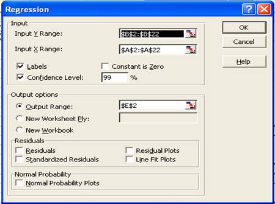
- Click OK. The result will be displayed fro E2 as shown below:
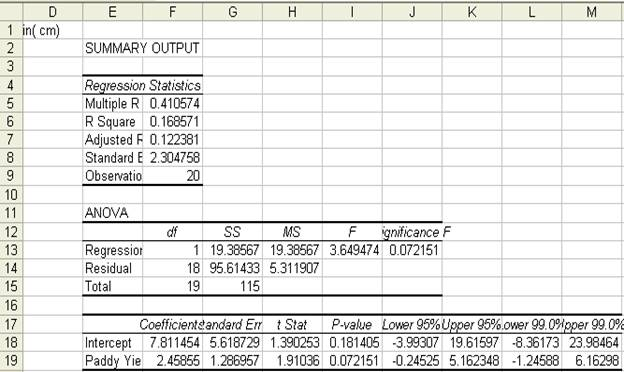
t-test for two samples
- t-test for two samples assuming Perform t-test for two samples assuming equal variances: yield of food in kg/ha in Kharif and Rabi season from 1996-97 to 2006-07.
- The data is entered in Excel sheet as shown below:
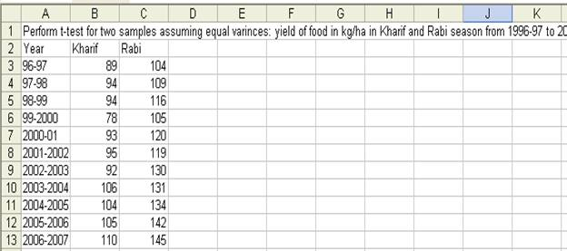
- Choose t-Test: Two-Samples assuming Equal Variances in the Data Analysis window:
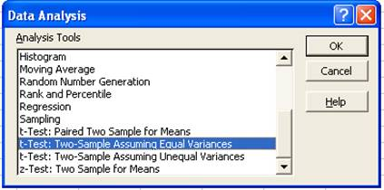
- In the t-Test: Two-Samples assuming Equal Variances window enter the Variable 1 Range and Variable 2 Range.
- Check the Labels option
- Hypothesized mean difference be 0.5
- Let Alpha value be 0.05
- Set output range as E2.
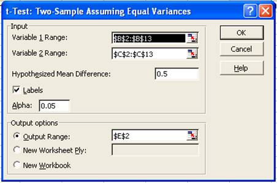
- The result will be displayed from E2 as shown below:
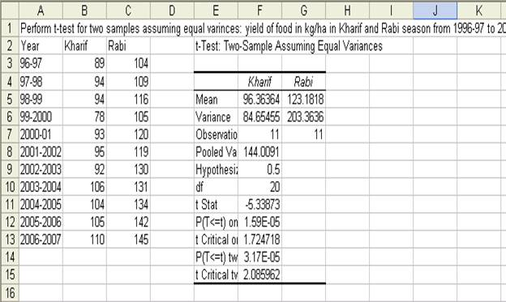
ANOVA with One-way Classification
- Perform ANOVA One Way Classification for yield of food in kg/ha in three seasons from 1996-97 to 2006-07
- The data is entered in Excel sheet as follows:
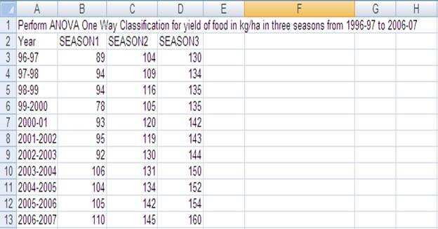
- Choose ANOVA: Single Factor from Data Analysis window.
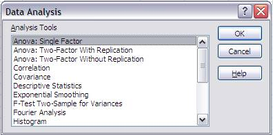
- In the ANOVA: Single Factor window enter the input range. The input range in the example is B2:D13
- Choose Group by Columns
- Check Labels in the first row
- Output range is set to F2 as follows:
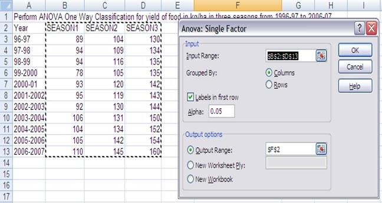
- The result of the ANOVA with One-way classification is displayed from F2 as shown below:
|